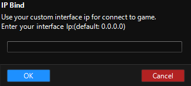

General
Now that you’re finished with Starting off you can launch your game with
Start Client from Start game subsection and explore as you read through.
{kind=link}
| Option | Description |
|---|---|
| Silkroad executable path | Displays the absolute path to your client executable. From the list on the right, you can select your client type |
| Client type dropdown | Allows you to select a client type for your server |
[!TIP] Use the button
...to select your executable path with a file explorer.
Start game
| Option | Description |
|---|---|
| Start | Kill Client | Starts or kills the client | Start Clientless | Starts the client as clientless, you won’t be able to hide or unhide the client until you kill the client and start the client again |
| Hide | Unhide Client | Hides or unhides the game client |
| Go Clientless | When you start the client normally, you can go clientless |
Automated login
| Option | Description |
|---|---|
| Account | A list of account entries you can select from |
| Player | A list of characters you’ve created in-game to select from |
| Enable automated login | Logs you into the game with the specified account and character |
| Captcha | Solves the dynamic captchas on login |
| Enable static captcha solve | If the captcha doesn’t change with every login mark this option enter the value that is present on the client |
| Auto start bot | Starts the bot loop when you login to the game |
| Use return scroll | Will use a return scroll after you’ve logged in |
| Auto Hide Client | Hides client on login |
| Auto Char Select |
Selects a character automatically based on the
Auto Select option you’ve marked
|
[!NOTE] You will only be able to see your characters’ namesafter you login once.
Creating a login entry
Click on Setup:
{kind=link}
Type your:
UsernamePasswordSecondary Password
[!IMPORTANT] iSRO clients will require in-game second passwords that only consist of numbers, enter that and select
JoymaxorJCPlanetdepending on where you created your account.
Server name
[!IMPORTANT] You don’t need to enter this if your client only has one server, it’ll automatically select that on. Otherwise, enter your server’s name.
-
Click on
Add, and voila! You’ve created your first login entry. If you wish to edit this entry click on your username on the list, edit the desired part and then clickSaveandOK. - Select your account and tick
Enable automated login.
Client settings & Bot settings
Lets you customize client and bot behavior.
Server Pending
Options regarding pending login entries.
Footer
Shows the server information, contains IP Bind button, a save button for the bot configuration, a start stop button
Footer > IP Bind
Allows you to bind an IP.
{kind=link}